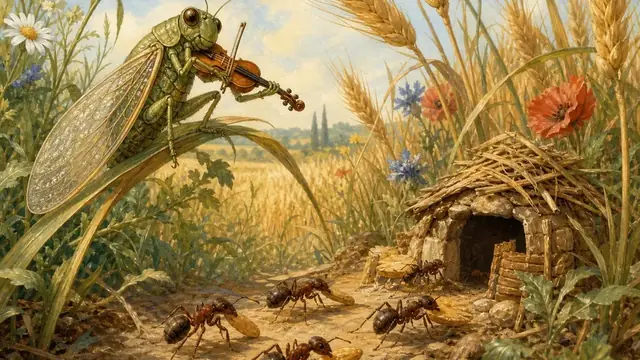
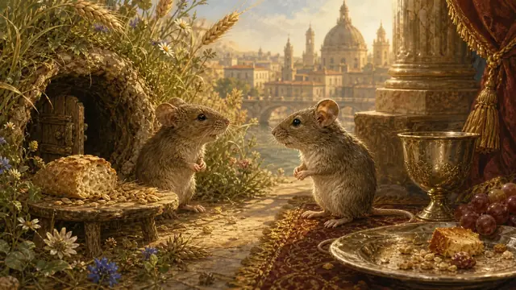
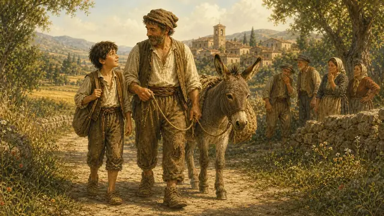
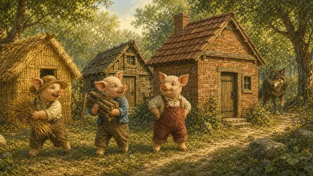
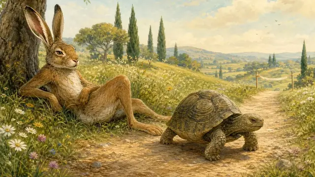
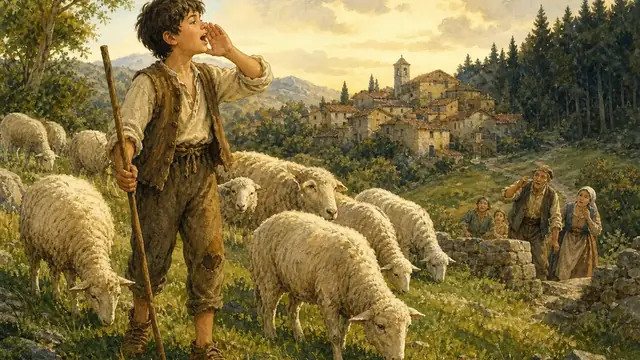

SC
科学


TE
テクノロジー

CU
文化
ST
歴史

FA
寓話
A1・A2・B1・B2・C1
犬と骨
貪欲さと見た目。
全文を読む →A1・A2・B1・B2・C1ライオンとネズミ
優しさ、感謝、そして助け合い。
全文を読む →A1・A2・B1・B2・C1キツネとブドウ
欲望、誇り、そして失望。
全文を読む →
A1・A2・B1・B2・C1セミとアリ
仕事、将来、そして団結。
全文を読む →
A1・A2・B1・B2・C1都会のネズミと田舎のネズミ
シンプル、豊かさ、そして自由。
全文を読む →
A1・A2・B1・B2・C1粉屋とその息子とロバ
判断、常識、選択の自由。
全文を読む →
A1・A2・B1・B2・C1オオカミと三匹の子豚
慎重さ、仕事、そして準備。
全文を読む →
A1・A2・B1・B2・C1ウサギとカメ
一貫性、才能、規律。
全文を読む →
A1・A2・B1・B2・C1横たわる羊飼いの少年
真実、評判、そして信頼。
全文を読む →読んでレベルを選択してから話しましょう。
各テキストは、個別のレッスン中にガイド付きの会話として使用できます。